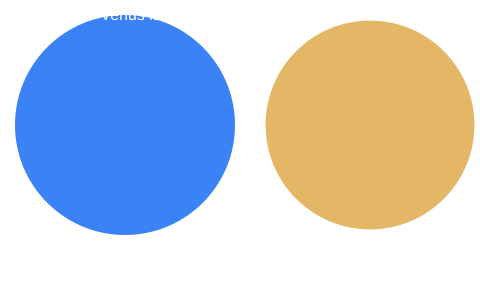

Venus Facts
- Diameter: 12,104 km.
- Distance from the Sun: about 108.2 million km.
- One year: 225 Earth days.
- One rotation takes 243 Earth days, longer than its year.
- Surface temperature: about 465 °C, the hottest planet.
- Moons: 0.
- Atmosphere is about 96% carbon dioxide.
Fun Facts Pop-up
Click to open a pop-up with a random fun fact.
How Big Is It?
